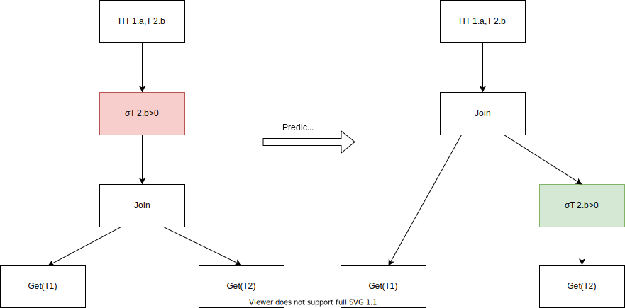

AST Rewrite
上一节介绍了如何从一个SQL-〉AST， 这一节将会介绍AST-〉AST
Parser解析得到AST，InterpreterFactory会得到指定类型的
Interpreter比如我们的SelectQuery就会是SelectQueryInterpreter。
AST Rewrite就是在SelectQueryInterpreter的构造函数中。
src/Interpreters/InterpreterSelectQuery.cpp
在它的构造函数中我们可以发现主要做了两个部分的工作：
- Rewrite Joins
- analyze
Rewrite Join
这里做的还是比较琐碎的事情，大概就是把CrossJoin改为InnerJoin， 还有就是把多个join on条件改写为多个subquery。 此处没有考虑join顺序这些，这些还依赖于Cost-Based Optimizer，但是 ClickHouse并没有CBO。不赘述。
analyze
这里就是Rewrite的主要部分了，会把ast重写成一个新的AST, 以及会把一部分整理后的信息放到TreeRewriteResult中去。
auto analyze = [&] (bool try_move_to_prewhere)
{
//...
syntax_analyzer_result = TreeRewriter(context).analyzeSelect(
query_ptr,
TreeRewriterResult(source_header.getNamesAndTypesList(), storage, metadata_snapshot),
options, joined_tables.tablesWithColumns(), required_result_column_names, table_join);
//...
if (try_move_to_prewhere && storage && query.where() && !query.prewhere())
{
//...
}
if (query.prewhere() && query.where())
{
//...
}
//...
}
主要是在 TreeRewrite.analyzeSelect 中做了大部分的重写,其它地方做了少量的重写。
还是举一个pushdown的例子
对于这样的一条查询:
SELECT T1.a, T2.b
FROM T1, T2
where T2.b > 0
一般来说，这个SQL解析之后得到的AST就是下图左边的样子，
会先把T1, T2 Join在一起，然后才使用WHERE T2.b > 0进行过滤。
那么这里问题就出现了。
假设T1有m个records，而T2有2n个records，其中只有2条满足T2.b > 0
如果没有做谓词下推操作，那么CrossJoin则会计算m * 2n条的结果，然后再做过滤处理。
另一方面，我们在看谓词下推如下图的右边所示，我们把过滤在Join之前给做了。
继续按前文所提到的数据量来看，此时这个filter之后，就只有2条records，Join就只需要处理 m * 2的结果，
计算量提高了N倍，这里我们可以感受到AST Rewrite的巨大作用。
